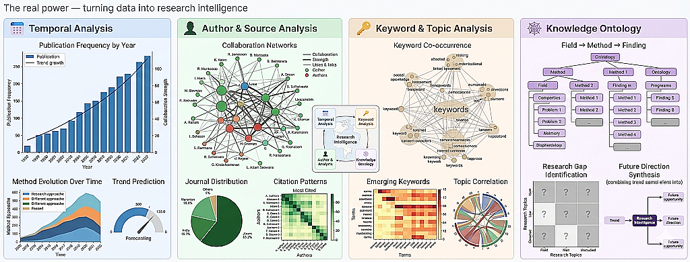
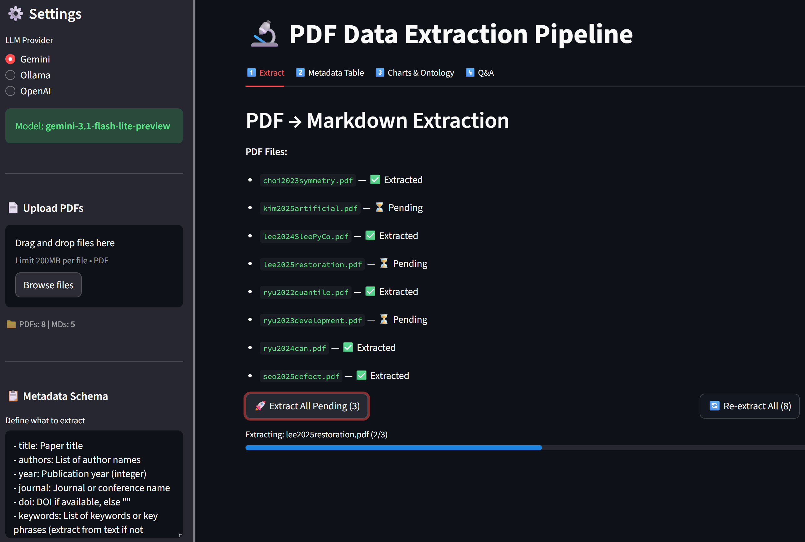
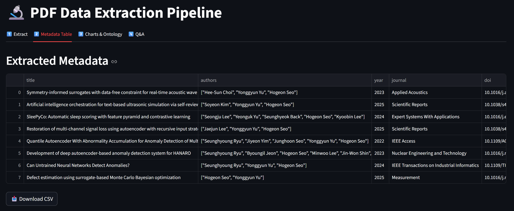
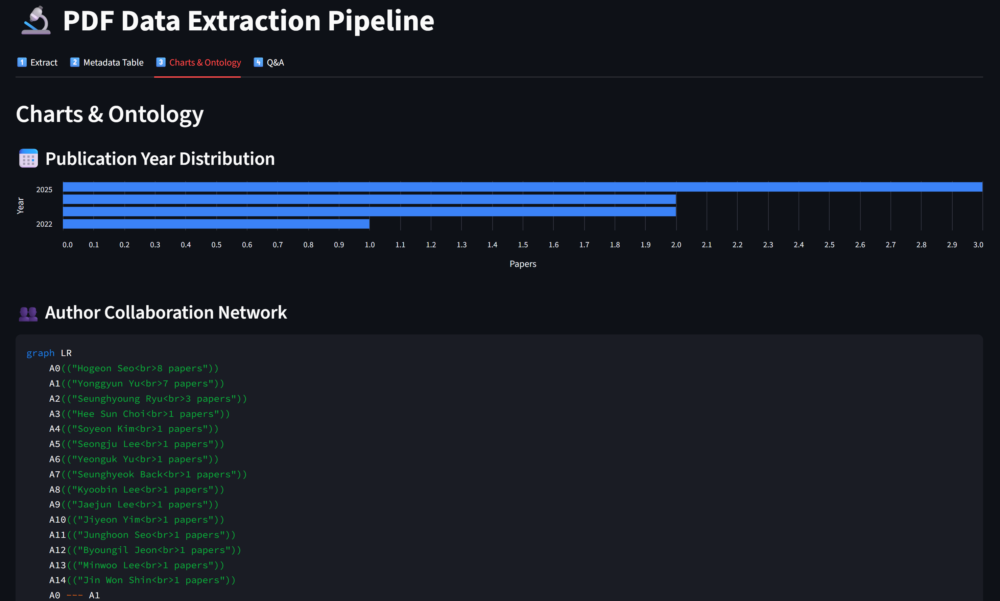
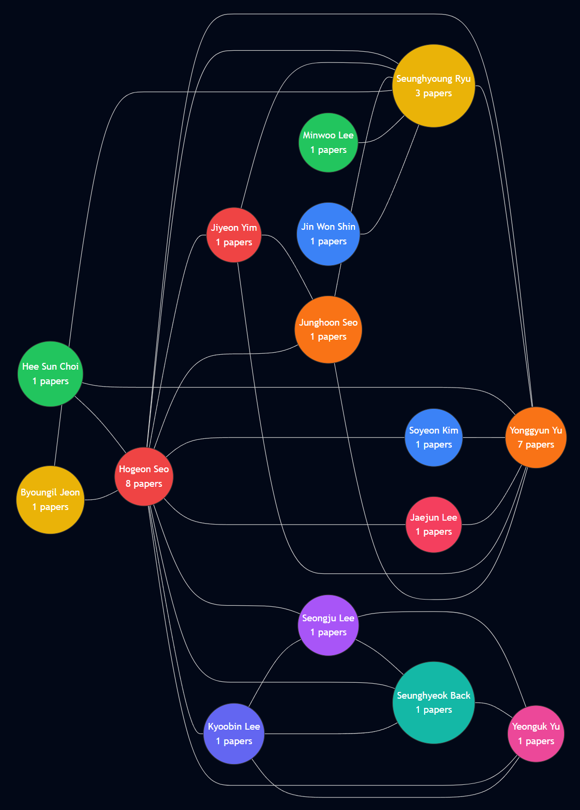
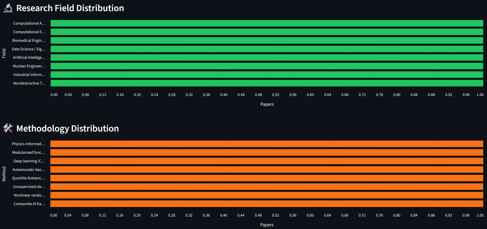
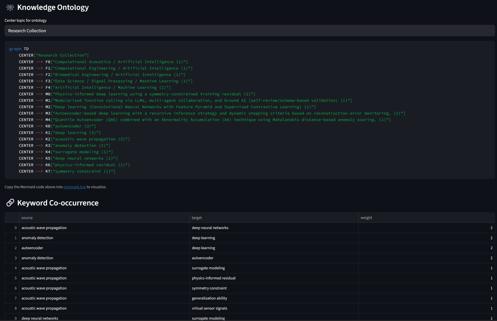

PDF → Markdown → Metadata → Charts → Insight
Lecture, Practice, and Discussion for Week 6
You have PDFs. You need insights. The gap is enormous.
Understanding the fundamental format difference
| Aspect | Markdown | |
|---|---|---|
| Purpose | Visual presentation (print/screen) | Structured text (read/process) |
| Structure | Layout-based (coordinates, fonts) | Semantic (headings, lists, links) |
| AI-ready | Difficult (text extraction is lossy) | Easy (plain text with markup) |
| Searchable | Limited (no semantic structure) | Full text search + metadata |
| Editable | Requires special tools | Any text editor |
| Metadata | Embedded in binary format | YAML frontmatter (key-value) |
| Version control | Binary diff (useless) | Text diff (meaningful) |
| LLM-friendly | Must extract text first | Directly usable as context |
Data about data — the key to unlocking your paper collection
Everything between --- markers is structured metadata, everything below is the document body
---
title: "Deep Learning for Material Property Prediction"
authors: ["Kim, J.", "Lee, S.", "Park, H."]
year: 2024
journal: "Nature Materials"
keywords: ["deep learning", "materials science", "property prediction"]
methodology: "Graph Neural Network"
key_findings: "GNN outperforms CNN by 15% on crystal property prediction"
---
## Abstract
This paper presents a novel approach to...Using AI to read papers and extract structured data
From folder of PDFs to structured database
The real power — turning data into research intelligence

These are generated automatically from extracted metadata
A 4-level framework for metadata-driven research intelligence
LLMs extract text, but the same entity can appear in many forms
normalize_author()The schema defines what data you get — tailor it to YOUR research
# Default schema (works for most papers)
- title: Paper title
- authors: List of author names
- year: Publication year
- journal: Journal or conference name
- keywords: Key phrases
- abstract: The abstract
- methodology: Primary research method
- key_findings: 1-2 sentence summary
# Example: Materials Science custom fields
- material_system: Primary material studied
- synthesis_method: How the material was made
- characterization_tools: Equipment used (XRD, SEM, TEM, etc.)
- performance_metric: Key performance number and unit
# Example: Machine Learning custom fields
- dataset: Dataset used for training/evaluation
- model_architecture: Neural network architecture
- baseline_comparison: What was compared against
- accuracy_metric: Best reported accuracy/F1/BLEU scoreKey takeaways
Build a PDF Data Extraction Pipeline — Streamlit Web App
A 4-tab Streamlit app for end-to-end paper analysis
.md filesapp.py — Main Streamlit app (4 tabs)pdf_to_md.py — PDF → Markdown converter with LLM extractionllm_client.py — LLM client (extraction + chat)chart_generator.py — Charts and ontology from metadatapdfs/ — input folder (put your PDFs here)md_output/ — output folder (generated .md files)Install dependencies and prepare folders
cd practices/week_06
pip install streamlit PyPDF2 openai python-dotenv pandaspractices/week_06/
app.py # Main Streamlit app
pdf_to_md.py # PDF → MD conversion
llm_client.py # LLM client
chart_generator.py # Visualization generators
pdfs/ # Put your PDF files here
md_output/ # Generated .md files (auto-created).env from Week 5 (or practices/.env)pdf_to_md.py)Extract text, send to LLM, parse response, save as .md
# pdf_to_md.py (key functions)
from PyPDF2 import PdfReader
import json, os
def extract_pdf_text(pdf_path):
reader = PdfReader(pdf_path)
return "\n".join(p.extract_text() or "" for p in reader.pages)
def build_extraction_prompt(raw_text, user_schema):
return f"""Extract metadata as JSON + body as Markdown.
## Schema: {user_schema}
## Output: ```json {{ ... }} ``` ---BODY--- (markdown body)
## Paper Text: {raw_text[:30000]}"""
def parse_llm_response(response_text):
metadata = {}
if "```json" in response_text:
json_str = response_text.split("```json")[1].split("```")[0]
metadata = json.loads(json_str)
body = response_text.split("---BODY---")[1] if "---BODY---" in response_text else ""
return metadata, body.strip()
def save_markdown(output_dir, filename, metadata, body):
"""Save as .md with YAML frontmatter (lists as indented items)."""
lines = ["---"]
for k, v in metadata.items():
if isinstance(v, list):
lines.append(f"{k}:")
for item in v: lines.append(f' - "{item}"')
else:
lines.append(f'{k}: "{v}"')
lines.extend(["---", "", body])
md_path = os.path.join(output_dir, filename.replace(".pdf", ".md"))
with open(md_path, "w", encoding="utf-8") as f:
f.write("\n".join(lines))
return md_path
def load_all_metadata(md_dir):
"""Load YAML frontmatter from all .md files (supports list fields)."""
all_meta = []
for fname in sorted(os.listdir(md_dir)):
if not fname.endswith(".md"): continue
with open(os.path.join(md_dir, fname), encoding="utf-8") as f:
content = f.read()
if not content.startswith("---"): continue
parts = content.split("---", 2)
meta, current_key, current_list = {"_filename": fname}, None, []
for line in parts[1].strip().split("\n"):
if line.startswith(" - "): # list item
current_list.append(line.strip()[2:].strip('"'))
else:
if current_key and current_list: # save previous list
meta[current_key] = json.dumps(current_list)
current_list = []
if ": " in line:
k, v = line.split(": ", 1)
v = v.strip().strip('"')
if v in ("", "|"): current_key = k
else: meta[k] = v; current_key = None
elif line.endswith(":"): # key with list below
current_key = line[:-1].strip()
else: current_key = None
if current_key and current_list:
meta[current_key] = json.dumps(current_list)
all_meta.append(meta)
return all_metallm_client.py)Two functions — one for extraction, one for Q&A chat
# llm_client.py
from openai import OpenAI
import os
from dotenv import load_dotenv
load_dotenv()
def get_client(provider="Gemini"):
# Same as Week 5 — Gemini / Ollama / OpenAI
...
def extract_metadata(client, model, raw_text, prompt):
"""One-shot extraction — no streaming needed."""
response = client.chat.completions.create(
model=model,
messages=[
{"role": "system", "content": "You are a precise metadata extractor."},
{"role": "user", "content": prompt}
],
max_tokens=4096,
)
return response.choices[0].message.content
def chat_with_data(client, model, context, user_message, history):
"""Chat about extracted data — streaming."""
system_msg = f"""You are a research data analyst.
Use the paper metadata below to answer questions.
# Paper Data\n{context}"""
messages = [{"role": "system", "content": system_msg}]
messages.extend(history)
messages.append({"role": "user", "content": user_message})
return client.chat.completions.create(
model=model, messages=messages, stream=True)extract_metadata()chat_with_data()chart_generator.py)Turn metadata into visualizations
# chart_generator.py
from collections import Counter
import json, re
def normalize_author(name):
"""Normalize author name — keep full name, clean formatting."""
name = name.strip().strip('"').replace(".", "").replace("-", " ")
name = re.sub(r"[\d()\[\]{}*]", "", name)
name = " ".join(name.split())
if "," in name: # "Last, First" → "First Last"
parts = [p.strip() for p in name.split(",", 1)]
name = f"{parts[1]} {parts[0]}".strip()
return name.title()
def normalize_authors_list(authors_raw):
"""Parse and normalize author list from metadata."""
if isinstance(authors_raw, list): names = authors_raw
elif isinstance(authors_raw, str):
try: names = json.loads(authors_raw.replace("'", '"'))
except: names = [n.strip() for n in authors_raw.split(",")]
else: return []
return [normalize_author(n) for n in names if n.strip()]
def author_cooccurrence(metadata_list):
"""Build co-authorship edges + author counts."""
edges, author_count = Counter(), Counter()
for meta in metadata_list:
authors = normalize_authors_list(meta.get("authors", "[]"))
for a in authors: author_count[a] += 1
for i, a1 in enumerate(authors):
for a2 in authors[i+1:]:
edges[tuple(sorted([a1, a2]))] += 1
return {"edges": [{"source": s, "target": t, "weight": w}
for (s, t), w in edges.most_common(30)],
"counts": dict(author_count.most_common(20))}
def count_by_field(metadata_list, field):
"""Count occurrences of a metadata field."""
counter = Counter()
for meta in metadata_list:
counter[meta.get(field, "Unknown")] += 1
return dict(counter.most_common(20))
def year_distribution(metadata_list):
"""Count papers per year."""
counter = Counter()
for meta in metadata_list:
try: counter[int(meta.get("year", 0))] += 1
except: pass
return dict(sorted(counter.items()))
def build_keyword_cooccurrence(metadata_list):
"""Build keyword co-occurrence pairs."""
# ... (same pattern as author_cooccurrence)
def generate_mermaid_ontology(metadata_list, center_topic="Research"):
"""Generate Mermaid graph from fields, methods, keywords."""
# ... graph TD with CENTER → top fields/methods/keywords
def generate_mermaid_author_network(metadata_list):
"""Generate Mermaid graph showing author collaboration network."""
data = author_cooccurrence(metadata_list)
lines = ["graph LR"]
for i, (author, cnt) in enumerate(data["counts"].items()):
lines.append(f' A{i}(("{author}<br>{cnt} papers"))')
for edge in data["edges"]:
# Connect co-authors with --- edges
...
return "\n".join(lines)app.py)Upload PDFs → LLM extracts metadata → saves as .md files
# app.py — Tab 1 (Extract)
with tab1:
st.header("PDF → Markdown Extraction")
pdf_files = os.listdir(PDF_DIR) # List PDFs in folder
md_files = os.listdir(MD_DIR) # List already-extracted MDs
# Show status per PDF
for pdf_name in pdf_files:
md_name = pdf_name.replace(".pdf", ".md")
status = "✅" if md_name in md_files else "⏳"
st.markdown(f"- `{pdf_name}` — {status}")
if st.button("🚀 Extract All Pending"):
progress = st.progress(0)
for i, pdf_name in enumerate(pending_pdfs):
progress.progress(i / len(pending_pdfs), f"Extracting: {pdf_name}")
raw_text = extract_pdf_text(os.path.join(PDF_DIR, pdf_name))
prompt = build_extraction_prompt(raw_text, user_schema)
response = extract_metadata(client, model, raw_text, prompt)
metadata, body = parse_llm_response(response)
save_markdown(MD_DIR, pdf_name, metadata, body)
st.rerun()md_output/ — no re-extraction needed on reloadView, export, and visualize extracted metadata
# app.py — Tab 2 (Metadata Table)
with tab2:
all_meta = load_all_metadata(MD_DIR)
df = pd.DataFrame(all_meta)
st.dataframe(df, use_container_width=True)
st.download_button("📥 Download CSV", df.to_csv(), "metadata.csv")
# app.py — Tab 3 (Charts & Ontology) — uses altair for horizontal bar charts
import altair as alt
with tab3:
# Year distribution (horizontal bar chart)
year_data = year_distribution(all_meta)
df = pd.DataFrame(year_data.items(), columns=["Year", "Count"])
df["Year"] = df["Year"].astype(str)
chart = alt.Chart(df).mark_bar().encode(
y=alt.Y("Year:N", sort="-x"), x="Count:Q")
st.altair_chart(chart, use_container_width=True)
# Author collaboration network (normalized full names)
author_mermaid = generate_mermaid_author_network(all_meta)
st.code(author_mermaid, language="mermaid")
author_data = author_cooccurrence(all_meta)
st.dataframe(pd.DataFrame(author_data["counts"].items(),
columns=["Author", "Papers"]))
# Field / Methodology distribution (horizontal bar charts)
for field, label in [("research_field", "Field"), ("methodology", "Method")]:
data = count_by_field(all_meta, field)
df = pd.DataFrame(data.items(), columns=[label, "Count"])
chart = alt.Chart(df).mark_bar().encode(
y=alt.Y(f"{label}:N", sort="-x"), x="Count:Q")
st.altair_chart(chart, use_container_width=True)
# Knowledge ontology + Keyword co-occurrence (same as before)
st.code(generate_mermaid_ontology(all_meta), language="mermaid")
st.dataframe(pd.DataFrame(build_keyword_cooccurrence(all_meta)))Chat with AI about all your extracted papers
# app.py — Tab 4 (Q&A)
with tab4:
# Build context from all metadata
context = "\n\n".join(
f"### {m.get('title')}\n" +
"\n".join(f"- **{k}**: {v}" for k, v in m.items())
for m in all_meta
)
# Quick analysis buttons
quick_prompts = {
"📊 Trend Analysis": "Analyze temporal trends...",
"🔍 Common Themes": "What common themes...",
"⚡ Research Gaps": "Identify 3-5 gaps...",
"🔀 Cross-Pollination": "Find unexpected connections...",
}
for label, template in quick_prompts.items():
if st.button(label):
# Send template as prompt → stream response
...
# Chat input (same streaming pattern as Week 5)
if prompt := st.chat_input("Ask about your papers..."):
stream = chat_with_data(client, model, context, prompt, history)
for chunk in stream:
... # stream to placeholderFrom raw PDFs to interactive research intelligence
Launch the app and process your papers
cd practices/week_06
streamlit run app.pyExpected UI (4 tabs):
┌──────────────────────────────────────────────────────┐
│ [1️⃣ Extract] [2️⃣ Metadata Table] [3️⃣ Charts] [4️⃣ Q&A] │
│ │
│ Tab 1 — PDF → Markdown Extraction │
│ │
│ 📁 PDF Files: │
│ - paper1.pdf — ✅ Extracted │
│ - paper2.pdf — ✅ Extracted │
│ - paper3.pdf — ⏳ Pending │
│ │
│ [🚀 Extract All Pending (1)] [🔄 Re-extract All] │
│ │
│ Processing Log: │
│ ✅ paper1.pdf → paper1.md │
│ ✅ paper2.pdf → paper2.md │
└──────────────────────────────────────────────────────┘md_output/ folder to verify YAML frontmatter is correctViews of the app and process your papers






Complete these tasks during the hands-on session
.env and prepare 3-5 PDF papers in pdfs/ folderapp.py, pdf_to_md.py, llm_client.py, chart_generator.pystreamlit run app.py and verify the 4-tab UI loads.md files appear in md_output/.md file and verify YAML frontmatter has correct metadataCore Competency & Midterm Progress
"In an era where AI conducts experiments and writes papers, what is the irreplaceable skill of a researcher?"
Each AI agent reflects a real debate in the research community
Where should you be right now?
Post your response on the forum this week
1. Core Competency: Read the three AI agent opinions above. Which perspective do you most agree with, and why? What would you add that none of the three agents mentioned? Think about your own research field — what specific skill makes you irreplaceable?
2. Today you learned to extract structured metadata from PDFs using LLM. Design a custom extraction schema for your specific research field: what 5-8 metadata fields would be most valuable for analyzing papers in YOUR domain? Why these fields?
3. Midterm progress update: Share your current specification status. What's your app's name, core problem, and 3 main features? What's your biggest design challenge so far?
Data Extraction & Processing
📚 PyPDF2 Documentation 📚 Marker — Best PDF to Markdown Converter 📚 LangChain Document Loaders
Metadata & Knowledge Graphs
📚 Semantic Scholar API 📚 OpenAlex — Open Research Knowledge Graph 📚 YAML Frontmatter Specification
Visualization
📚 Mermaid.js Documentation 📚 Streamlit Charts API 📚 Plotly for Python
Anthropic Free Online Courses (Recommended)
Three things to remember
Next week: Specification document due — finalize your project design and prepare for prototyping in Week 8.